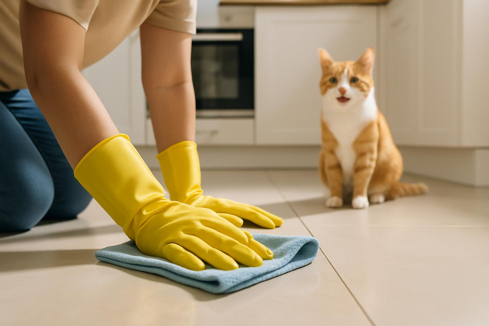

Опасны ли инсектициды для животных? Безопасное применение инсектицидов в Омске

Один из самых частых вопросов, который мы слышим от жителей Омска: **"А это безопасно для моей кошки/собаки?"** Это абсолютно правильный и важный вопрос. Забота о здоровье питомцев — наш приоритет. В этой статье мы подробно расскажем, какие инсектициды использует «СибДез», почему они безопасны для животных и как правильно подготовить квартиру к обработке, чтобы исключить любые риски.
Классы опасности инсектицидов: Что нужно знать о безопасности
Все химические вещества, используемые в дезинсекции, делятся на четыре класса опасности. Этот показатель — ключевой для понимания безопасности препарата.
IV класс опасности — Малоопасные вещества
Профессиональные службы, такие как «СибДез», используют только препараты **IV класса опасности**. Это означает, что они:
- **Малотоксичны** для теплокровных (людей и животных).
- **Не имеют резкого запаха** или он минимален.
- **Быстро разлагаются** на безопасные компоненты после высыхания и проветривания.
- **Сертифицированы** и разрешены к применению в жилых помещениях на территории РФ.
Эти препараты действуют на нервную систему насекомых, но не представляют угрозы для млекопитающих при соблюдении правил применения.
Почему бытовые средства опаснее профессиональных?
Многие бытовые аэрозоли и спреи содержат более высокие концентрации активных веществ или менее современные формулы, которые могут быть более токсичны для животных, особенно для кошек, которые очень чувствительны к некоторым компонентам (например, к пиретроидам в высоких дозах). Профессиональные препараты, напротив, используются в микрокапсулированной форме, что обеспечивает длительный эффект при минимальной токсичности для теплокровных.
Как подготовить дом и питомца к дезинсекции: Пошаговая инструкция
Главное правило безопасности — **исключить контакт животного с препаратом** во время обработки и до полного высыхания и проветривания помещения.
Шаг 1: Эвакуация питомцев
На время обработки и в течение 2-3 часов после нее **все животные должны покинуть квартиру**. Это касается не только кошек и собак, но и:
- **Птиц:** Клетки необходимо вынести из квартиры, так как дыхательная система птиц очень чувствительна к любым аэрозолям.
- **Рыб:** Аквариум можно оставить, но его нужно плотно накрыть пленкой, отключить компрессор и фильтр.
- **Рептилий и грызунов:** Клетки и террариумы также необходимо вынести.
Шаг 2: Уборка и защита
Необходимо убрать все предметы, с которыми питомец контактирует:
- **Миски для еды и воды** — вымыть и убрать в герметичные пакеты или шкаф.
- **Игрушки, лежанки, лотки** — постирать или убрать.
- **Корм** — герметично упаковать.
Это гарантирует, что после обработки животное не слижет остатки препарата с поверхности своих вещей.
Что делать после обработки: Правила возвращения в квартиру
Возвращаться в квартиру можно только после того, как она будет тщательно проветрена и проведена влажная уборка.
1. Проветривание
После обработки помещение должно проветриваться **минимум 2-3 часа** (лучше 4-5 часов). Откройте все окна и двери, создав сквозняк. Это удалит остатки аэрозоля из воздуха.
2. Влажная уборка
Проведите влажную уборку только тех поверхностей, с которыми животные могут контактировать:
- Полы (особенно в центре комнат).
- Столешницы, столы, ручки дверей.
- Места, где стоят миски и лежанки.
Важно: Не мойте плинтусы, задние стенки мебели и другие места, где был нанесен препарат для длительного действия. Это "барьер", который должен оставаться активным.
3. Возвращение питомцев
После проветривания и уборки можно возвращать животных. Убедитесь, что все их миски и игрушки чистые. Если питомец случайно оближет обработанную поверхность (например, плинтус), это не вызовет острого отравления, но может привести к легкому недомоганию. При любых подозрительных симптомах (рвота, вялость) немедленно обратитесь к ветеринару, сообщив, что в квартире проводилась дезинсекция.
Часто задаваемые вопросы о безопасности инсектицидов
❓ Вопрос: Могут ли инсектициды 4 класса опасности навредить кошке?
Ответ: Риск минимален. Препараты 4 класса опасности (малоопасные) не обладают острой токсичностью для млекопитающих. Главное — исключить прямой контакт во время обработки и провести тщательное проветривание и влажную уборку контактных поверхностей после нее. Кошки более чувствительны, чем собаки, но при соблюдении наших инструкций они будут в полной безопасности.
❓ Вопрос: Что делать, если собака съела таракана после обработки?
Ответ: Это маловероятно, но если это произошло, не паникуйте. Количество инсектицида, которое может попасть в организм животного таким путем, крайне мало. Препараты 4 класса опасности не вызывают серьезного отравления. Однако, если вы заметили рвоту или сильную вялость, немедленно обратитесь к ветеринару.
❓ Вопрос: Можно ли оставить аквариум в комнате?
Ответ: Да, можно. Но обязательно нужно отключить компрессор и фильтр, а сам аквариум плотно накрыть полиэтиленовой пленкой. Это предотвратит попадание инсектицида в воду, что может быть опасно для рыб.
❓ Вопрос: Сколько времени животным нельзя находиться в квартире?
Ответ: Минимум 3-4 часа. Это включает время самой обработки (30-60 минут) и время, необходимое для проветривания (2-3 часа). Чем дольше проветривание, тем лучше.
❓ Вопрос: Какие препараты использует «СибДез»?
Ответ: Мы используем только сертифицированные инсектициды последнего поколения на основе современных действующих веществ (например, группы пиретроидов и неоникотиноидов) от ведущих мировых производителей. Все они относятся к **IV классу опасности** и безопасны при профессиональном применении.
«СибДез» гарантирует: Ваша безопасность и безопасность ваших питомцев — наш главный приоритет. Мы используем только проверенные, сертифицированные и малоопасные препараты, а наши специалисты всегда готовы дать подробные инструкции по подготовке и уборке.